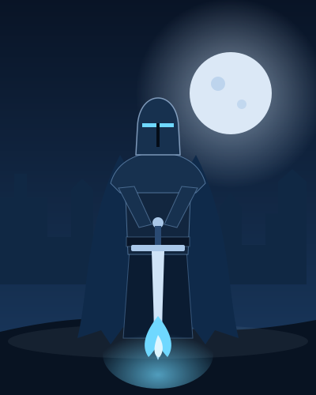

🏰 Origen
Clan Nakamoto | Jornada AM
Hola, soy
Coder en formación del Clan Nakamoto. Aprendo HTML, CSS y Git para crear páginas web, con disciplina y constancia.
Clan Nakamoto | Jornada AM
Disciplina, resiliencia y responsabilidad. Constancia en el desarrollo, resolución de problemas bajo presión y compromiso con la entrega de código de calidad.
Mejor manejo del tiempo para rendir en más tareas y prácticas. Optimización de flujos de trabajo personales para maximizar la productividad sin sacrificar la calidad.
Mantener la calma y el orden cuando se requiere. Siempre presente como buen complemento para los compañeros, ofreciendo soporte técnico y moral en momentos de desafío.
“La disciplina vencerá al talento”

Hola, soy un coder y estoy aprendiendo HTML, CSS y Git para crear páginas web. Esta es mi página de presentación, construida con Tailwind CSS y publicada con GitHub.